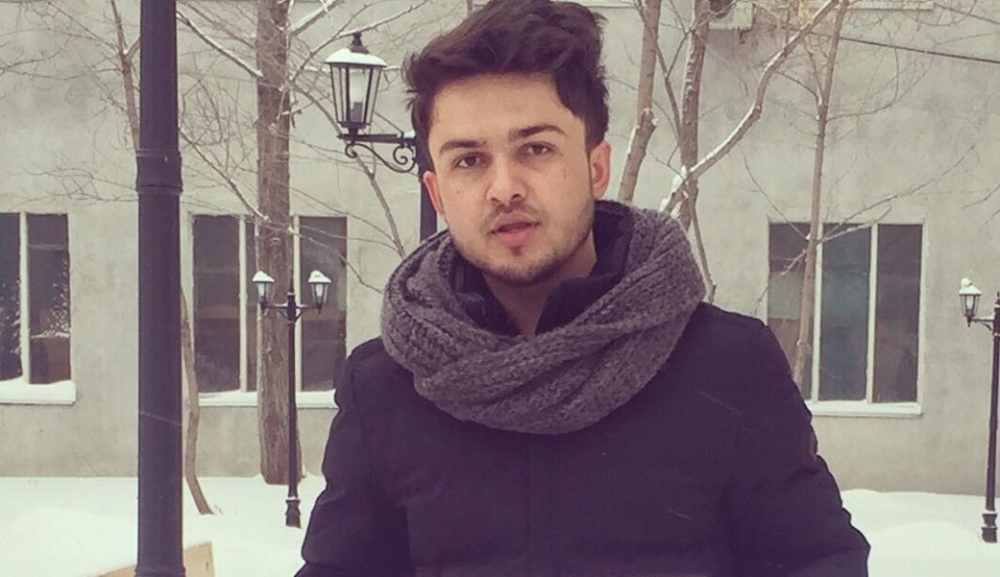
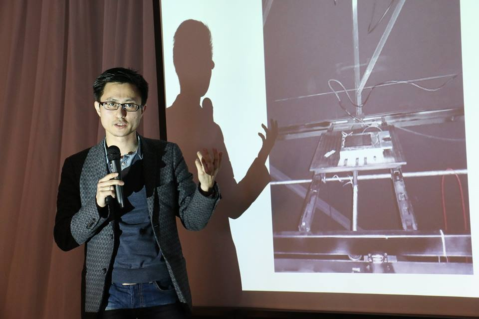
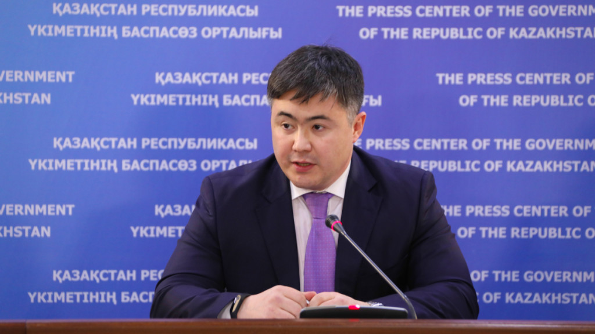

ASTANA – Hafizullah Qaderi, an Afghan student studying in Kazakhstan, recently posted a video on his Facebook page asking Kazakh President Nursultan Nazarbayev and U.S. President Donald Trump to step up efforts to find a solution to peace and stability in his homeland.
ASTANA – Dias Tastanbekov, one of the 100 New Faces project winners, exemplifies hard work and a thirst for knowledge. He works with entrepreneurs on the Zertis aeroponic greenhouse to produce green vegetables, while simultaneously researching biodegradable bone fixation implants for his PhD and running a rocketry school to make science attractive to children.
ASTANA – Kazakh Minister of National Economy Timur Suleimenov said the inflation rate will stay within the projected corridor of 5-7 percent this year. He discussed the preventive measures to curb inflation which the government will take by the end of 2018.
